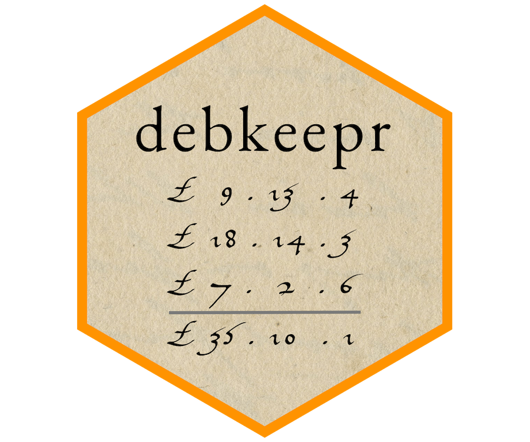

# install.packages("remotes")
remotes::install_github("jessesadler/debkeepr")debkeepr
Analysis of historical non-decimal currencies and value systems that use either tripartite or tetrapartite systems such as that of pounds, shillings, and pence.

debkeepr integrates non-decimal currencies that use tripartite and tetrapartite systems into the methodologies of Digital Humanities and the practices of reproducible research. The package makes it possible for historical non-decimal currencies, such as the tripartite system of pounds, shillings, and pence, to behave like decimalized numeric values through the implementation of the deb_lsd, deb_tetra, and deb_decimal vector types. These types are based on the infrastructure provided by the vctrs package. debkkeepr simplifies the process of performing arithmetic calculations with non-decimal currencies — such as adding £3 13s. 4d. sterling to £8 15s. 9d. sterling — and also provides a basis for analyzing account books with thousands of transactions recorded in non-decimal currencies. The name of the debkeepr package derives from this latter capability of analyzing historical account books that often used double-entry bookkeeping.
Installation
You can install debkeepr from GitHub with remotes:
Please open an issue if you have any questions, comments, or requests.
Historical Background
The debkeepr package uses the nomenclature of l, s, and d to represent pounds, shillings, and pence units in non-decimal currencies. The abbreviations derive from the Latin terms libra, solidus, and denarius. The libra was a Roman measurement of weight, while the solidus and denarius were both Roman coins. The denarius was a silver coin from the era of the Republic, in contrast to the golden solidus that was issued in the Late Empire. As the production of silver coins overtook that of gold by the 8th century, a solidus came to represent 12 silver denarii coins, and 240 denarii were — for a time — made from one libra or pound of silver. The custom of counting coins in dozens (solidi) and scores of dozens (librae) spread throughout the Carolingian Empire and became ingrained in much of Europe. However, a variety of currencies or monies of account used other bases for the solidus and denarius units. Some currencies and other value systems, such as those for weights, added a fourth unit. debkeepr provides a consistent manner for dealing with any set of bases within tripartite or tetrapartite systems through the bases attribute of deb_lsd, deb_tetra, and deb_decimal vectors.
Resources
-
Getting Started with debkeepr vignette: An introduction to the
deb_lsd,deb_tetra, anddeb_decimaltypes and their use as vectors and as columns in data frames. - Transactions in Richard Dafforne’s Journal vignette: Examples of financial and arithmetic calculations dealing with various currencies taken from the practice journal in Richard Dafforne’s Merchant’s Mirrour (1660), a 17th-century textbook for learning accounting practices.
-
Analysis of Richard Dafforne’s Journal and Ledger vignette: An analysis of the practice journal and ledger in Dafforne’s Merchant’s Mirrour using the
dafforne_transactionsanddafforne_accountsdata provided indebkeepr. - A PDF copy of Dafforne’s practice journal can be consulted to further investigate the practices of early modern double-entry bookkeeping.